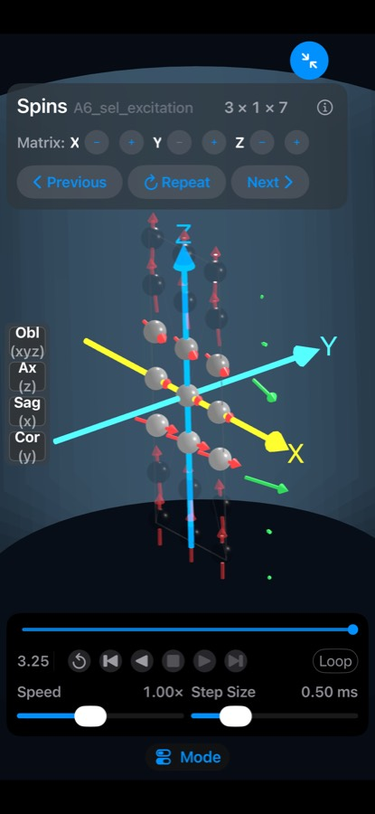

Spintuition
SpintuitionVector Array (Spins Panel)
The Spins panel visualizes the magnetization of a three-dimensional lattice of spins during MRI pulse sequences.
Each spin represents a group of protons treated as one magnetic dipole, drawn as an arrow through a sphere. The matrix is simulated with the Bloch equations, including T1 and T2 relaxation and off-resonance.
Use the expand button (↗, top right) to view the spins full screen with additional controls.

Navigation
- Drag to orbit the camera around the matrix.
- Pinch to zoom in and out.
- View buttons (left side) snap to Oblique, Axial, Sagittal and Coronal views. Optional zoom and rotate animations can be enabled in Settings.
- Expand / collapse (top right) toggles the full-screen spins view.
Coordinate system
| Axis | Color | Direction |
|---|---|---|
| X | Yellow | Left–right |
| Y | Cyan | Anterior–posterior |
| Z | Blue | Superior–inferior, along the main field B0 |
The largest matrix dimension spans the full 25 cm field of view; smaller dimensions keep the same spin spacing.
Matrix size
Use the X, Y and Z steppers to add or remove spins (X × Y × Z). Sequences can set the matrix with
the SimmrMatrixSize directive.
Display options
| Option | Description |
|---|---|
| Vector averages | Show the global XYZ average vector, or averages along X, Y or Z rows. Optionally average the transverse component only. |
| Fade Unexcited Spin | Fades spins with little transverse signal (0–25%), so excited spins stand out. |
| Show Trail | Draws a trail of the arrow tip over the last 0–2 ms. |
| Show B1 | Shows an orange RF rotation-axis vector while RF is on, normalized to the peak RF amplitude. |
| Lab Frame | Switch between the rotating frame (default) and the laboratory frame. |
| Spin Sphere Size | Settings option to change sphere size; set it to 0 to see vector length clearly. |
Spin shading
Choose in Settings → 3D Visualization:
- Mini Magnets (default) — white/red hemispheres like small bar magnets; white faces the magnetization direction.
- Phase Gray — grayscale by XY phase angle, from black (−180°) to white (+180°).
- Plain — uniform gray spheres for minimal visual complexity.
Video export
Export Video records the simulation through the full waveform duration at 30 fps, capturing the spins and waveforms as a QuickTime movie you can save or share.